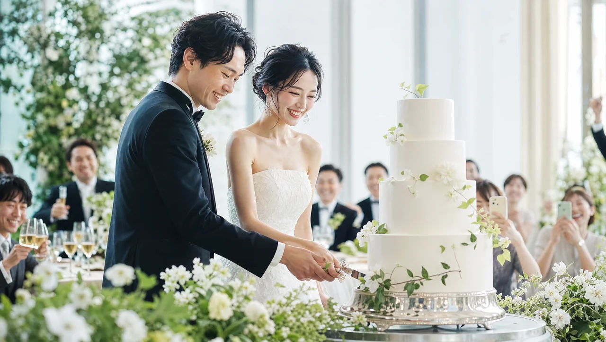

BRIDAL
ブライダルエステとパーソナルジムどっちがいい？違い・費用・併用の考え方を徹底比較

SUMMARY
ブライダルエステは肌のお手入れやリラクゼーション、パーソナルジムは体型そのものを変えるアプローチで、役割が異なります。体のラインを変えたいならトレーニング＋食事管理が中心となり、仕上げの肌ケアとしてエステを併用する花嫁も多くいます。どちらか一方ではなく、目的に応じて使い分けるのが賢い選択です。
結論：役割が違うから「どっちが上」ではない
ブライダルエステとパーソナルジムは、どちらが優れているという関係ではなく、担う役割がそもそも異なります。この違いを理解すると、自分に必要なのはどちらか（あるいは両方か）が見えてきます。
ざっくり分けると、エステは肌の状態を整え、リラックスしながらコンディションを高めることが得意。パーソナルジムはトレーニングと食事で体のラインそのものを変えることが得意です。目指すゴールが「肌のツヤ」なのか「ドレスに映えるシルエット」なのかで、優先すべきものは変わります。
本記事は、どちらかを否定するものではありません。エステにはエステの、ジムにはジムの価値があります。大切なのは、自分の悩みと挙式までの時間に合わせて選ぶことです。※効果には個人差があります。
エステが得意なこと／ジムが得意なこと
エステは「肌と仕上げ」、ジムは「体型と姿勢」が得意分野です。それぞれの守備範囲を整理しておくと、無駄なく組み合わせられます。
ブライダルエステが得意なこと
- 挙式に向けた肌のお手入れ・コンディショニング
- 背中やデコルテなど、当日に見える部分の肌ケア
- 施術を受けながらのリラクゼーション・気分の切り替え
パーソナルジムが得意なこと
- 二の腕・背中・くびれなど、体のラインを整えるトレーニング
- 食事管理による全身のシルエットづくり
- 姿勢の改善による立ち居振る舞いの美しさ
体そのもののシルエットを変えたいなら、ジムでのトレーニングと食事管理が中心になります。どの部位を優先すべきかは、ドレスで見られる部位の記事で詳しく解説しています。
両者は「アプローチする層」も違います。エステは主に肌の表面や体表のコンディションに働きかけ、ジムは筋肉や姿勢といった体の内側から形を変えていきます。だからこそ、片方でできないことをもう片方が補える関係にあります。どちらか一方だけでは物足りないと感じる花嫁が併用を選ぶのは、この補完関係があるからです。

費用感の比較（一般的な相場観）
費用は「回数券や期間契約でまとまった金額になる」点が共通していますが、内訳の考え方が異なります。ここでは特定の他社名や具体的な料金には触れず、一般的な相場観として整理します。
ブライダルエステは、施術回数のコースを組むのが一般的で、挙式までの回数や部位によって総額が変わります。パーソナルジムは、トレーニング回数と食事指導がセットになった集中プランが基本です。どちらも「1回いくら」より「トータルでいくらか」で比較するのが実態に近い考え方です。
NEXUSのブライダル集中プランは、60分24回で192,000円（税込）からで、全プランに食事指導プレミアムが標準付帯します。体型づくりと食事サポートがまとまっているため、別々に契約するより見通しが立てやすいのが特徴です。詳しい料金の考え方は、費用相場の記事もあわせてご確認ください。※効果には個人差があります。
挙式日から逆算する短期集中プログラム
ブライダル集中プランの料金を見る →期間と頻度の考え方
エステは「式直前の集中ケア」、ジムは「数ヶ月かけた積み重ね」と、必要な期間の性質が違います。この違いを踏まえて計画を立てると、両立しやすくなります。
体型づくりは一朝一夕には進まないため、ジムは挙式の3〜5ヶ月前から週1〜2回のペースで取り組むのが目安です。一方、肌のコンディショニングは式に近い時期に集中させるほうが、当日にピークを合わせやすい面があります。
NEXUSは全店8:00〜23:00営業・完全個室・手ぶらOKのため、仕事や式準備と並行しても通いやすい環境です。体型づくりを早めに始め、肌ケアを式直前に重ねるという時間配分が、多くの花嫁にとって現実的な進め方になります。
併用スケジュール例
併用する場合は、「体型づくりを先、肌の仕上げを後」に配置するのが基本形です。時系列で役割を分けると、どちらも効果を実感しやすくなります。
- 5〜3ヶ月前：パーソナルジムで体型づくりを本格化。トレーニングと食事管理で全身のシルエットを整える。
- 2〜1ヶ月前：ジムを継続しつつ、ブライダルエステで肌のお手入れをスタート。前撮りに向けてコンディションを高める。
- 2週間前〜前日：ジムはコンディション調整に切り替え、エステで最終の肌仕上げ。むくみ対策も意識する。
もちろん、予算や時間の都合でどちらか一方に絞る選択も十分にありです。「体のラインを変えたい」が最優先ならジムから始めるのが、後悔の少ない順番といえます。
目的別の選び方
迷ったら、「一番変えたいのは肌か、体型か」で決めてください。これが最もシンプルで、後悔の少ない判断軸です。
肌のツヤやコンディションを整えることが最優先なら、ブライダルエステが向いています。二の腕・背中・くびれなど体のラインを変えたいなら、パーソナルジムが中心になります。そして「どちらも叶えたい」なら、時期をずらして併用するのがベストです。
もう一つの判断軸は「残された時間」です。挙式まで数ヶ月あるなら、体型づくりに十分取り組めるためジムを軸にできます。逆に式まで数週間しかなく、体型を大きく変えるのが難しい場合は、肌の仕上げにフォーカスしてエステを選ぶという考え方もあります。目的と時間、この2軸で考えれば迷いは減ります。
NEXUSの無料体験では、あなたの悩みと挙式までの期間をうかがったうえで、ジムだけで進めるべきか、エステとの併用を視野に入れるべきかも含めて中立的にご提案します。無理な勧誘は行いませんので、比較検討の一環として気軽にご利用ください。※効果には個人差があります。
料金・回数・期間の目安をチェック
ブライダル集中プランの料金を見る →FAQ
よくある質問
Qブライダルエステとパーソナルジム、両方通う時間はありません。どちらを優先すべき？＋
Qエステとジムを併用すると効果は高まりますか？＋
Qパーソナルジムでも肌はきれいになりますか？＋
体型づくりは、パーソナルジムから始めませんか
挙式日までの残り日数に合わせて、あなた専用のプランをご提案します。
※無理な勧誘は一切ありません。
本記事で紹介するブライダルボディメイクの成果には個人差があります。掲載の画像はサービス内容をわかりやすくお伝えするためのイメージです。実際のプランは無料体験時のカウンセリングで、お一人おひとりの体調・目標・挙式日に合わせてご提案します。